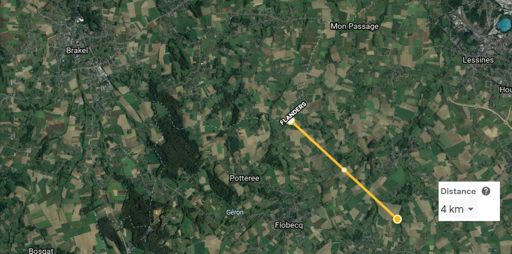

Introductie
Middenin de akkers en weiden van ‘le Pays des Collines’ ligt het domein 'Le Quesnoy' in een
zeer rustige omgeving geklassificeerd als landschappelijk waardevol agrarisch gebied. Het domein ligt in
vogelvlucht ongeveer 4 kilometer van de taalgrens (gemeentegrens van Everbeek – Brakel).
 (Bron: Google Earth)
Het
domein heeft een totale oppervlakte 1,3 Ha en grenst vooraan aan de rue 'Quesnoit' en wordt achteraan
omringd door een houtwal met inheemse bomen en struiken.Het domein (zie foto hieronder: de zones binnen de rode lijnen) bestaat thans uit volgende gedeelten die allen behalve nummers 5 en 6 rond een binnenkoer liggen:
 (Bron: Google Earth)
(Bron: Google Earth)- 1. Het zogenoemde ‘hoofdhuis’
- 2. De gîte
- 3. Het ‘polyvalent gedeelte’
- 4. De schuur met stallen en werkatelier
- 5. De weide (5a) met groententuin (5b) en boomgaard (5c)
- 6. Een terrein met kapelletje dat mogelijk in bouwgrond kan worden omgezet
Bij het binnenkomen van de vierkantshoeve langs de bijna zes meter brede oprit ziet men links binnenkoer . Deze oprit (foto's A3 en A4) loopt door tot aan de weide, de groententuin en een betonnen parking gelegen achter de schuur (geschikt voor 2 voertuigen of aanhangwagens).
De binnenkoer is uitgebouwd met een 'binnencirkel' en een halve maan met tegen de gebouwen buxusstruiken, kiwi's, ficus, hortensdia petiolaris kamperfoelie, enz.. (foto's A5 tot en met A10)
De binnenkoer heeft ook een regenput in het midden (foto A11) evenals een waterput (foto A12) en ouderwetse pomp (foto A13) die beide thans niet in werking zijn.
Het hoofdhuis omvat grosso modo op het gelijkvloers een ruime hall, een tweede hall met toilet, een ingerichte keuken, een eetplaats en living en een tussenruimte (overgang hoofdhuis-gîte). Op de eerste verdieping is er een wasplaats, een badkamer en vijf slaapkamers.
De gîte, die een afzonderlijke parking, inkom en terras heeft, omvat op de benedenverdieping een living, keuken en eetplaatsgedeelte met dubbele cassettehaard, een hall en technische ruimte. Op de verdieping vindt men er een badkamer en drie slaapkamers.
Het polyvalent gedeelte omvat op het gelijkvloers twee zalen, een keukengedeelte met afzonderlijke stockageruimte en een sanitair blok. Dit polyvalent gedeelte kan verbouwd worden tot een tweede woonst, een tweede gîte, een restaurant of een bedrijfsruimte. Het polyvalent gedeelte is trouwens reeds aangesloten op een privaat waterzuiveringsstation voor 54 personen en een vetvanger. De weide is vrij van pacht en kan met gebruik van de twee stallen en schuur ook aangewend worden door een paardenliefhebber.
Aan de overzijde van de straat bevindt zich nog een terrein van bijna 7 are met kapelletje (1,5 op 1 m). Dit terrein kan mogelijk tot bouwgrond omgevormd worden.
Meer details kunnen gevonden worden in de later volgende 'Uitgebreide omschrijving'.
In elk geval biedt dit geheel alle mogelijkheden om een eigen harmonieuze leef- en/of werkwereld uit te bouwen.
Historiek
De hoeve komt reeds voor op de beroemde Ferrariskaart (foto Hi1) die tijdens de
Oostenrijkse bezetting omstreeks 1775 werd gemaakt. Daaruit blijkt dat in het gehucht (‘le hameau’)
Quesnoy meer huizen voorkwamen dan thans het geval is.

Foto Hi1: Ferrarisstreekkaart
In 1990 werd de hoeve door de overgebleven zoon verkocht aan een Brussels gezin (Van Bever die er tien jaar verbleef). In 2000 werd de hoeve uiteindelijk gekocht door het gezin Govaert. De woning kwam uiteindelijk in 2006 in handen van Jacques Govaert.
De hoeve onderging diverse recente transformaties. Zo werd vanaf 1990 overgegaan tot een belangrijke renovatie van het oorspronkelijke hoofdhuis, dat een tweede renovatie onderging in het jaar 2000, en werd er een gîte gebouwd waar de vroegere paardenstal was. Op de plaats waar de vroegere koeienstal was, werd een polyvalent gedeelte gebouwd met dubbele zaal, sanitair blok en keuken. Dit polyvalent gedeelte heeft onder de vroegere eigenaars dienst gedaan als onthaalplaats voor jeugdgroepen en landelijke vormingen. Op de verdieping vindt men dan ook nog twee slaapzalen, twee begeleiderskamers en een toilet terug.
In 2014 werd de gîte volledig vernieuwd. Deze werd voorzien van degelijke isolatie (18 cm muurisolatie achter muren van 36 cm, 12 cm vloerisolatie en 30 cm dakisolatie), van een nieuwe keuken en een meer moderne landelijke inrichting. Het plaatselijk opstijgend vocht werd bestreden met onderschijving van alle muren. Een ventilatiesysteem met warmterecuperatie werd voorzien evenals een centraal stofzuigersysteem en de veluxen van de slaapkamers kunnen met gebruik van zonnecellen afgesloten worden.
Uitgebreide beschrijving
Hoofdhuis
Het huidige hoofdhuis dat voor het laatst in het jaar 2000 werd gerenoveerd, omvat op het gelijkvloers:- een ruime hall (met buitendeur uitgevend op de binnenkoer) en met drie binnendeuren uitgevend op de living, op een stockageruimte en op het keukengedeelte (3,95 x 4,25 = 16,80m²) (foto H1)
- een tweede hall (3,30 x 1,70 = 5,60m²) met toilet (2,00 x 1,60 = 3,20m²) en met tweede buitendeur (foto H2)
- een eetplaats en living met 4 ramen (drie uitgevend op de binnenkoer en één op de straatkant) ((9,30 x 4,20) + (3,05 x 2,60) = 47m²) (foto's H3 tot en met H5)
- een studie/bureauruimte met toegang tot een kleine kelder (met mazoutketel en ramen uitgevend op de straatkant) (2,05 x 7,10 = 14,55m²)(foto's H6 en H7)
- een boiler en stockageruimte uitkomd op de grote hall (2,30 x 3,50 = 8,00m²) (foto H8)
- een keukengedeelte (6,05 x 3,80 = 23,00m²) (foto's H9 tot en met H11)
- een ruimte (2,3 x 4,8 = 11,00m²) die de verbinding maakt met het gîtegedeelte (foto's H12 en H13); deze bevat een buitendeur (dit is de derde buitendeur van het hoofdhuis) en twee zekeringskasten

- een wasplaats (2,45 x 2,15 = 5,30m²) (foto H15)
- kleine overloop van trap naar wasplaats, badkamer en grote overloop (3,25 x 1,05 = 3,40m²) (foto H16)
- grote overloop van de kleine overloop naar alle slaapkamers (11,00 x 2,13 = 23,43m²) (foto's H17 en H18)
- een badkamer (volledig wandbetegeld en met 2 lavabo's, bad, douche en toilet) (3,05 x 3,40 = 10,40m²) (foto's H19 tot en met H20)
- vijf slaapkamers respectievelijk van:
- slaapkamer 1 (2 personen): 3,85 x 3,67 = 14,10m² (met veluxraam) (foto H21)
- slaapkamer 2 (2 tot 3 personen) met ondergedeelte: 3,30 x 3,65 = 12,00m² en mezzanine: 1,86 x 2,93 = 5,45m² (met veluxraam)(foto H22)
- slaapkamer 3 (1 persoon): 3,14 x 3,62 = 11,40m² (met gewoon raam) (foto H23)
- slaapkamer 4 (2 personen) met ondergedeelte: (3,33 x 2,36) + (1,97 x 1,35) = 10,52m² en mezzanine: 3,30 x 2,20 = 7,26m² (met veluxraam) (foto H25)
- slaapkamer 5 (1 tot 2 personen) met ondergedeelte: (2,16 x 2,80) + (1,07 x 0,87) = 6,97m² en mezzanine: (2,70 x 2,76) - (1,07 x 0,87) = 7,45m² (met veluxraam) (foto H26)
Gîte
De weg naar het domein en meer specifiek de gîte wordt met de bekende gele officiële bewegwijzering aangegeven (foto's G1 tot en met G3).
Deze gïte (vakantiehuis) is een afzonderlijk gedeelte geincorporeerd in de vierkantshoeve. De gîte heeft een afzonderlijke toegang met pad tot de straat (foto G4), een afzonderlijke parking (twee à drie voertuigen) (foto G5), een gazon (??? m²) (foto G6) en twee afzonderlijke terrassen (??? m² en ???m²) (foto's G7 en G8). Op de perceelsgrens is dit gedeelte begrensd door een rij van acht perenbomen in leivorm (8 soorten) (foto G9).
In 2014 werd de gîte volledig vernieuwd. Deze werd voorzien van degelijke isolatie (18 cm muurisolatie achter muren van 36 cm, 12 cm vloerisolatie en 30 cm dakisolatie), van een nieuwe keuken en een meer moderne landelijke inrichting. Het lokale opstijgend vocht werd bestreden met onderschijving van alle muren. Een ventilatiesysteem met warmterecuperatie (foto G10) werd voorzien evenals een centraal stofzuigersysteem (foto G11) en de veluxen van de slaapkamers kunnen met gebruik van zonnecellen afgesloten worden (foto G12).
De gîte omvat op het gelijkvloers:
- een keukengedeelte (te samen met de twee volgende gedeelten: 5,80 x 7,92 = 46,00m²) met volledig ingerichte keuken (ingebouwd: afwasmachine, inductieplaat, heteluchtoven, koelkast, diepvries en microgolfoven) (foto G13 en G14)
- een eetkamergedeelte (foto G15)
- een living met dubbele cassettehaard zichtbaar vanuit living en keuken (foto G16 en G17)
- een hall (foto G18) ((2,55 x 1,15) + (0,95 x 0,80) = 3,69m²) naar de verdieping met technische ruimte (boiler, wasmachine, droogkast, centraal stofzuigerapparaat, ...) en toilet
- een toilet (0,85 x 1,47 = 1,25m²) (foto G19)
- een technische ruimte (2,47 x 1,90 = 4,70m²) (foto G20)
Op de verdieping van de gîte vindt men:
- drie slaapkamers voor in totaal acht personen (9 indien men een bijzetbed plaatst in slaapkamer 1)
- slaapkamer 1 (4 personen): 3,78 x 4,58 = 17,30m² (foto G21)
- slaapkamer 2 (2 personen): 3,50 x 3,10 = 10,85m² (foto G22)
- slaapkamer 3 (2 personen): 4,43 x 2,47 = 10,95m² (foto G23)
- een badkamer met inloopdouche, bad, twee lavabo’s en een wc (2,90 x 3,43 = 9,95m²) (foto's G24 en G25)
- een overloop (foto G26)
De gîte beschikt over de formele goedkeuring van het Waals gewest en heeft de kwalificatie 3 aren (‘trois épis’) gekregen (zie rubriek documenten).
De elektriciteit en brandveiligheid werden gekeurd en de gemeente Ellezelles heeft de conformiteit met de vigerende voorschriften op zijn beurt goedgekeurd.
Zoals alle andere bewoonbarde gedeelten wordt de gîte met centrale verwarmming op mazout verwarmd. Er is zoals aangegeven ook een dubbele cassettehaard op het gelijkvloers uitgevend op de living en de keuken.
Het polyvalent gedeelte
Het zogenaamde polyvalent gedeelte omvat op het gelijkvloers:- twee zalen
- zaal 1: 11,65 x 6,12 = 71,30m² (foto's P1 en P2)
- zaal 2: 9,90 x 5,25 = 52,00m² (foto's P3 en P4)
- sanitair blok met drie toiletten, 2 urinoirs, drie douches en vier lavabo's (6,00 x 5,16 = 32,00m²) (foto's P5 tot en met P8)
- stockageruimte (in deze stockageruimte staat ook de mazoutketel van het jaar 2016 en enkele zekeringskasten) (2,70 x 4,70 = 12,70m²) (foto P9)
- keukengedeelte (6,00 x 4,00 = 24,00m²) (foto's P10 en P11)

Het polyvalent gedeelte omvat op de eerste verdieping:
- twee (slaap-)zalen
- slaapzaal 1: 10,85 x 3,00 = 32,55m² (met twee veluxramen en een glazen deur uitgevend op plat dak/terras) (foto's P12 en P13)
- slaapzaal 2: 10,85 x 3,00 = 32,55m² (met twee veluxramen en een glazen deur uitgevend op plat dak/terras) (foto's P14 en P15)
- een toilet
- twee (begeleiderskamers-) kamers (elk met veluxraam)
- begeleiderkamer 1: 3,50 x 2,05 = 7,20m² (foto P16)
- begeleiderkamer 2: 3,50 x 2,50 = 8,75m² (foto P17)
- kamer boven sanitair blok (iets minder groot als sanitair blok)
Het polyvalent gedeelte is aangesloten op een privaat waterzuiveringsstation (geschikt voor 54 personen) en een vetvanger (voor keukenresten).
Tegen de gevels van het polyvalent gedeelte staan drie druivelaars (foto P18) en aan de achterkant en zijkant is een border met bloemen en struiken (foto's P19 en P20).
Zoals alle andere bewoonbare gedeelten wordt het polyvalent gedeelte met centrale overwarming op mazout verwarmd. Dit polyvalent gedeelte werd ooit gebruikt voor landelijke stages.
Schuur met stallen en werkatelier
De schuur heeft een hoofdingang met poort vooraan en poort achteraan (foto's S1 en S2) en een zijingang (foto S3). De zijingang (3,10 x 4,90 = 15,20m²) van de schuur geeft uit op de binnenkoer. De schuur (22,00 x 9,75 = 215,00m²) omvat een grote ruimte met verhoog (foto's S4 tot en met S6) en met hooizolder (foto S7).
Er zijn twee stallen die uitgeven op de binnenkoer:
- stal 1 (voor 1 paard): 4,40 x 2,80 = 12,30m² (foto S8)
- stal 2 (vier paarden of koeien): 10,00 x 4,60 = 46,00m² (foto S9)
In de schuur is er ook een werkatelier met twee gedeelten:
- atelier 1: 3,30 x 4,80 = 15,80m² (foto S10)
- atelier 2: 4,80 x 2,60 = 12,50m² (foto S11)
Ook is er boven de stallen een eerste verdiep (4,90 x 14,10 = 69m²) (foto S12) dat als stockageruimte of voor een ander doeleinde kan gebruikt worden.
Er is een voorraadkelder (foto S13) onder de schuur die vanaf de straat kan bereikt worden (moet gedraineerd worden met domplelpomp) (5,40 x 5,30 = 23,30m²).
Op het dak van de schuur liggen 44 zonnepanelen (foto S14) met het maximumvermogen toegelaten voor privé-personen (10 Kwp). De afzonderlijke zekeringkasten voor deze zonnepanelen staan in het werkatelier (foto S15). De meter voor de meting van de opgewekte elektriciteit staat bij de algemene zekeringskast in het hoofdhuis (in de verbindingsruimte tussen de hoofdhuis en de gîte) (foto S16). Achter de schuur ligt nog een parking voor twee voertuigen of twee aanhangwagens (foto S17). Deze zonnepaneelinstallatie laat vlot een aantal mogelijkheden toe: bijvoorbeeld elektische bijverwarming, ...
Weide met groententuin en boomgaard
De weide heeft een oppervlakte van iets meer dan een hectare (foto's W1 tot en met W4) Deze weide wordt op de domeingrens omzoomd door een houtwal van ongeveer 3 à 4 meter dikte die beplant is met 800 inheemse bomen en struiken (foto's W5 en W6).Een drankinstallatie voor dieren (vb. koeien) is voorzien (foto W7).
De weide (maar niet de groententuin wordt thans gebruikt (geen pacht!) door een landbouwer die er elk jaar gedurende enkele maanden zijn koeien op zet (limousins) of hooi oogst (foto W8).
In deze weide is een deel beplant met fruitbomen. Het betreft appelbomen, kersenbomen, pruimen en okkernoten (foto's W9 tot en met W12).

De groententuin (???m²) ligt aan de achterkant van het polyvalent gedeelte (foto's W13 en W14).
Naast enkele appelbomen staan er ook een rij met aalbessenstruiken en frambozestruiken evenals twee zeer grote bosbessenstruiken (foto's W15 tot en met W17). Naast de groententuin ligt het waterzuiveringsstation voor 54 personen (foto W18).
Terrein met kapelletje
Aan de overzijde van de straat ligt nog een terrein (foto T1) dat lang in dienst is geweest als tweede groententuin (foto's). De bestemming van dit terrein is mogelijk omzetbaar naar 'bouwgrond' gelet op het feit dat het tussen twee huizen met tuin staat die zich op minder dan 75m bevinden (eventuele aanvraag door de koper in te dienen na verwerving van het terrein). Op het terrein staat een kappeletje (foto T2) en een kleine stal (???m²) (foto T3). Op dit braak terrein staan een vlierboom en een zwarte bessenstruik.Documentatie, attesten en vergunningen
Voor alle gebouwen werd een geldige bouwvergunning (foto D1) afgeleverd na
regularisatieprocedure ingediend door de vorige eigenaars Van Bever (jaar 2000).
Een energieprestatiecertificaat werd afgeleverd op ??? (foto D2).
Het geheel behaalt volgende scores:
Vele mogelijkheden
Thans is de hoeve in gebruik door 1 familie en zijn de gedeelten (1 tot 4) in gebruik als:
- 1: woongedeelte
- 2: gîte
- 3: stockageruimte in het polyvalent gedeelte
- 4: schuur (+stallen)
- 1: woning 1 (zelf personen)
- 2: woning 2 (1 à 2 personen)
- 3: woning 3 (huidige polyvalent gedeelte)
- 4: woning 4 + deel schuur (in huidige schuur)
Het geheel kan ook geexplloiteerd worden als restaurant of als bedrijfsvestiging . De woning is met zijn stallen en weide (en boomgaard) geschikt voor een paardenliefhebber of amateur van schapen/geiten/koeien/...

{kind=link}
Verbindingen en omgeving
Het domein ligt op 6 km van Lessen (Lessines) (vijf minuten met de auto) en op 15 km van
Ronse, Brakel en Geraardsbergen (telkens 15 minuten met de auto).
Er is een nabij treinstation in
Ronse, Lessen (Lessines), Aat (Ath) (18 km) en Geraardsbergen en eventueel Lierde.
Een bushalte
bevindt zich op 800 m.
Een Proxy Delhaize en een bakker zijn te vinden op 1,7 km.
Wodecq behoort
als gehucht tot de gemeente Ellezelles.
In Wodecq is er nog een apotheek op 500 m (pharmacie
Hanselin) en in het centrum van Wodecq een frituur op 1km (La frite gourmande) en een café (Le prétexte)
op 1 km te vinden.
Contacteer ons
Email: jacquesgovaert77@gmail.com
Telefoneer/SMS: 32+ 472 91 91 08